An iOS app for finding, saving and making alcohol-free drinks. I took it from a course project to the App Store — design, code and release.
A growing “sober-curious” audience wants the ritual of a cocktail without the alcohol, but recipes still live in scattered blog posts, screenshots and bar menus. There was no calm, dedicated place for the alcohol-free drink.
People skipping alcohol still want a drink that feels considered: flavour, presentation and a name worth ordering.
Mocktail recipes are buried in long articles and saved photos. Nothing lets you browse, filter and keep them in one place.
Recipe apps treat drinks as an afterthought: no ingredient filters, no “surprise me”, no space to add your own.
One clear job, done simply: one friendly place to find drinks by character or ingredient, keep the ones you love, and add your own.
The course gave me a working app. The release asked for everything a course doesn’t check: real content, real data handling, real review.
Designed and built as my final project for a React Native course: research, user goals, flows, a UI system and a working app.
Research · User goals · User flows · Architecture · UI system · Prototype · Build · Testing · Optimisation
What separated a course project from a product: template app config, the default icon, a test API key, data kept only in memory, mixed languages, a 5.5-second splash, no retry when the network failed.
Data saved on the device, a new icon and splash, English copy throughout, safe areas and keyboard handling, error states with “Try again”, a shorter splash, a clean share format.
Every card had the same subtitle, and the “100+ drinks” in the copy wasn’t true. I rewrote the copy, built character tags from the ingredients, made the filters real and added photos to your own recipes. Submitted for review.
Common for new developer accounts. I answered the same day with a 3-minute screen recording from the iPhone and a written walkthrough.
Version 1.0 released in 173 countries and regions.
New photos for every drink, the camera for recipe photos, edit and delete for your own recipes, and the app remembers light, dark or system theme.
I worked with Claude, Anthropic’s AI, as a build partner: Claude Code for the code, Cowork for release operations and QA, Claude Design for the App Store screenshots.
I owned the product decisions, the UX and the UI, reviewed and tested every change on the device, and ran the release myself: the Apple Developer account, the App Store Connect listing, the privacy answers and App Review.
The main journey is short on purpose. Every entry point leads to the same recipe screen, where the drink can be saved or shared. The second path is for your own drinks.
The tab bar holds the three jobs. Recipe, Surprise and Edit open on top of them and close back to where you were.
Search, character and ingredient filters, featured drinks.
Tags, ingredients, steps; save and share.
One random drink when you can’t decide.
Saved drinks, kept on the phone.
Photo, name, character, ingredients, steps.
Captured on my iPhone from the 1.1 build, in light and dark.
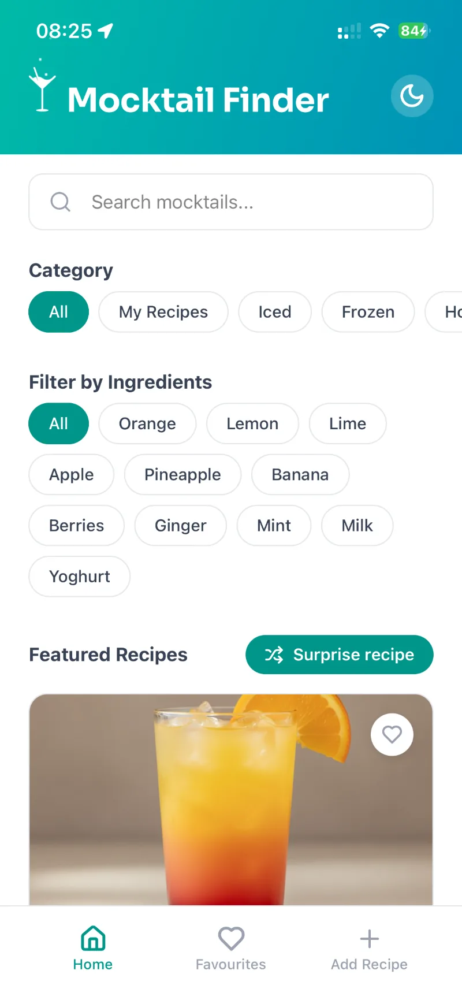
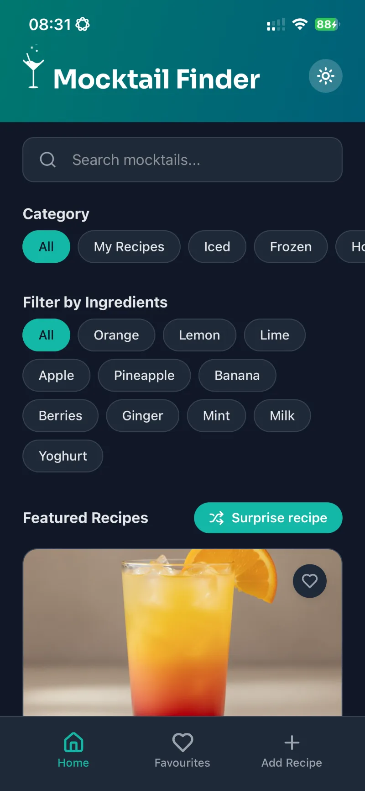
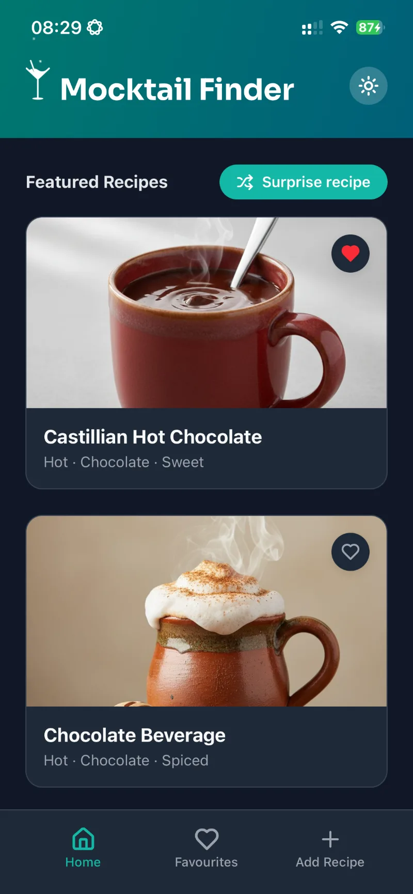
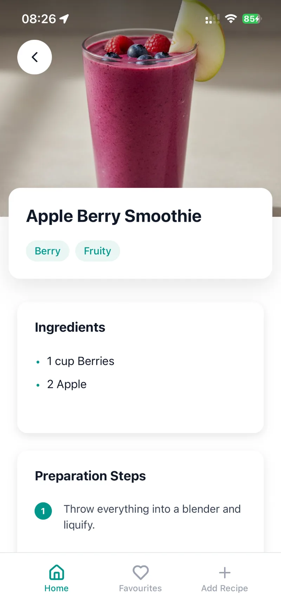
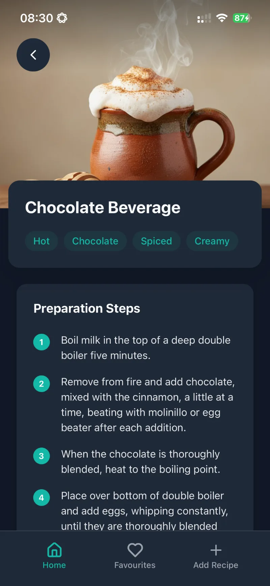
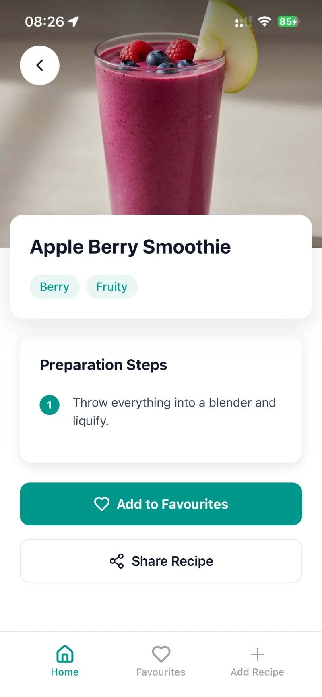
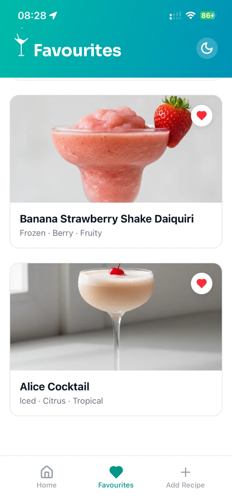
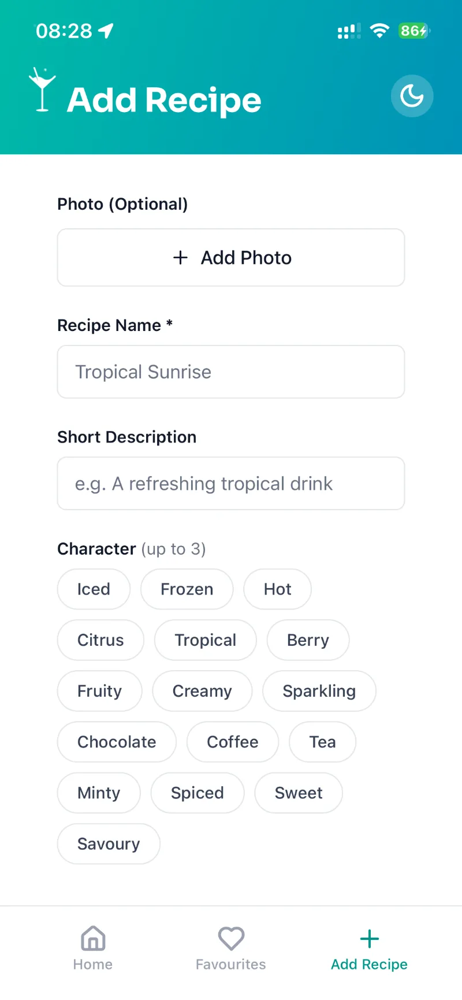
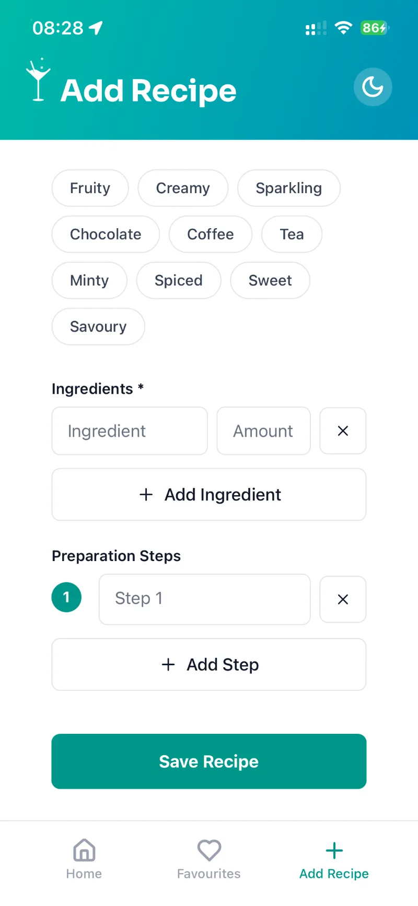
One codebase, cloud builds (EAS Build) and direct upload to App Store Connect (EAS Submit). No hand-maintained Xcode project.
Catches mistakes before a build reaches the phone.
Favourites, your own recipes and the theme stay on the device. No backend, no accounts.
Three tabs, with the recipe, surprise and edit screens stacked on top.
Curated drink data with a non-alcoholic filter. Recipe details are cached on the device for 30 days.
The iOS photo picker hands the app only the chosen photo, so no library permission is needed. The camera asks for access only when used.
Testing, release and source control. Vercel hosts this site, including the app’s privacy and support pages.
AI tools for the code, release operations and the App Store screenshots.
The listing screenshots run edge to edge, so swiping through them reads as one continuous picture.
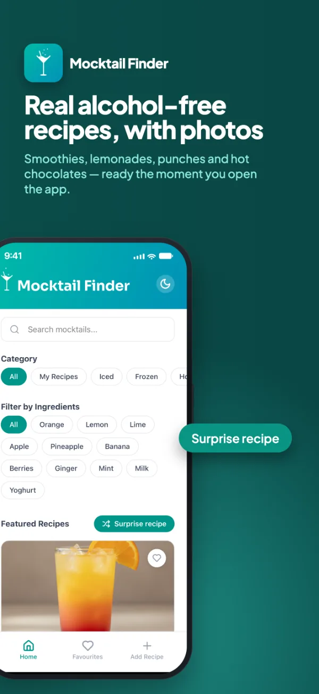
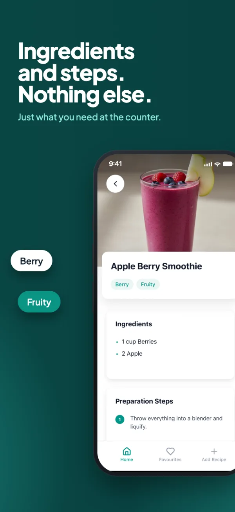
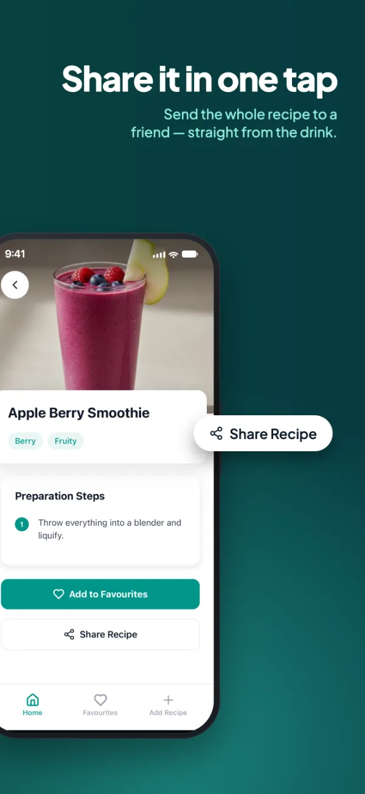
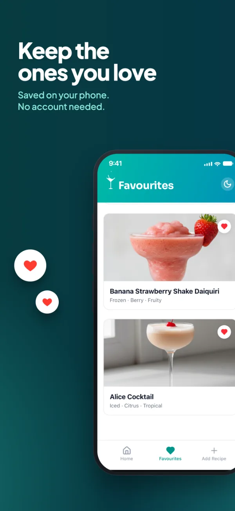
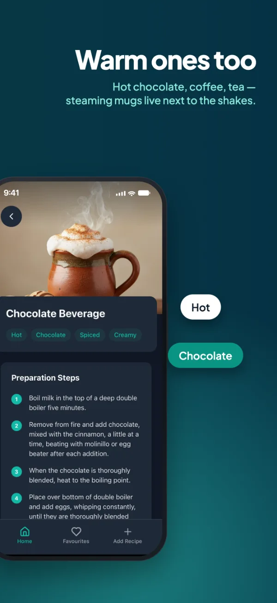
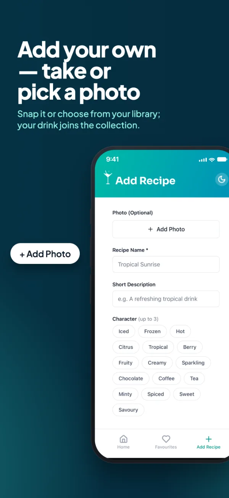
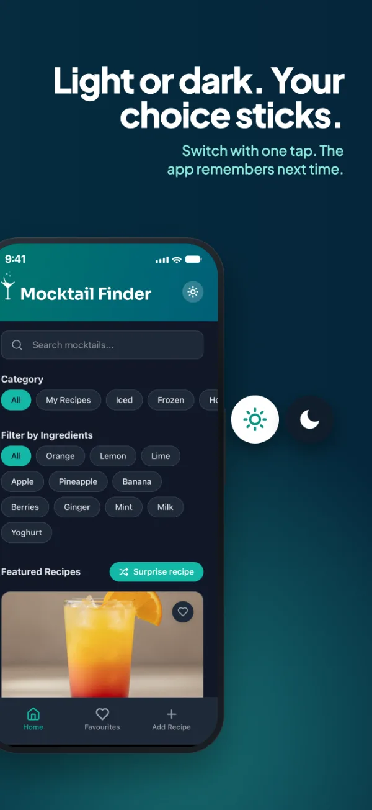